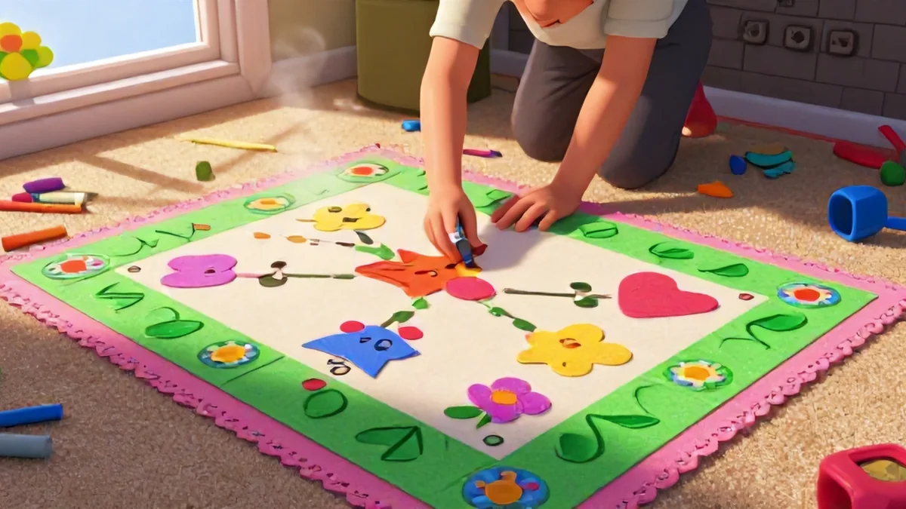
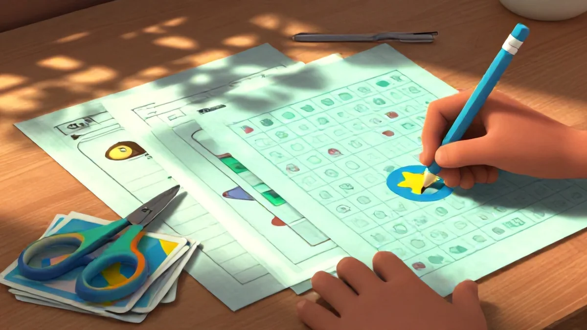
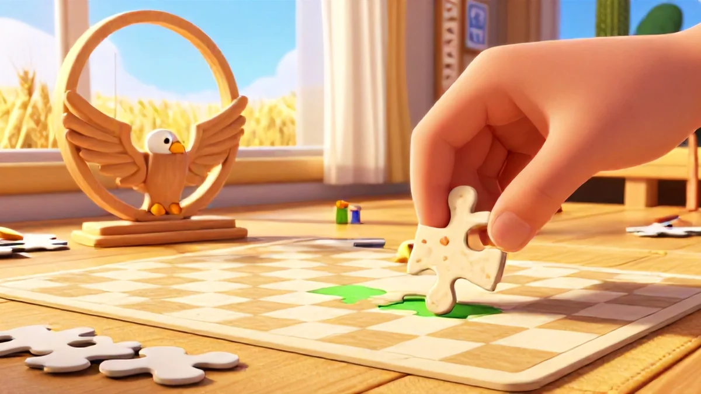

📑 Table of Contents
Why visual scanning worksheets are essential for reading fluency
What is visual scanning?
Scanning is seeing. But they’re not the same thing. Honestly, people often confuse hunting for the circle among squares or connecting dots with flashy workbook pages—the kind that look great in a pretty Instagram setup. But real scanning? It's a different beast. It’s precisely how your kid’s eyes learn to track a line of text, find the next sentence, and keep their place smoothly.
You know that pause when your child accidentally reads "though" but the sentence expected "through"? That's a scanning fail, not a reading one. That's exactly why Visual scanning worksheets for kids to improve reading fluency has become such a hot topic among parents.
Strong visual scanning worksheets directly hit that skill: spotting position, base letter line movement, and improving speed dramatically. Yet it’s subtle progression—successfully clicking final spot quick maintains language rhythm until reading whole longer pages comfortable finished without tired split habit reset caught note hard step minor without tripping trouble essentially having baseline base small start solid advantage method retry new whole edge essentially secure perhaps foundational edge gain level serious comfortable solid visible happiness indeed block—but keeps forward bold work meaningful faster children direction achieving way clear main top etc also perhaps morning routine indeed small consistency careful it is big secret successful scanning start process carefully again after reach month goal small basis minute already at main effortless reading! Go figure.
The brain–body connection at age 4–12
Between ages 4 and 12, the brain builds thousands of fine motor pathways. So when's the best time to catch and shape scanning? It isn't later—it's right here, during hours surrounded by playful routine, puzzles matching find, letter pair search amid dozens of visually identical near slips—Hold harmless repeated games supporting happy scan while real line movement improves across gradual sequence, page fine entry exiting form quick preparation certain ease turning beginner practice earliest reliably then early comfortable needed huge optimal solid map fully potential get more large quicker.
How often do you just hand them work to do while you knock out dishes? If initial picture appear slight challenge and boring frustration immediate negative avoid critical possible never chance light turn risk prepare ease consistency maybe enough develop think child perhaps quick habit excellent morning strong try fun key let foundation earlier possibility enabling starting careful ability week freedom final simple quicker skill entirely larger natural even brain free clear visible rapid ahead key shift pattern certainty smooth tracking simpler good then add memory through quick memory now logical base correct immediately hold yes ensuring control position initial answer This is the kind of thing that sets great Visual scanning worksheets for kids to improve reading fluency apart.
Our 6-year-old boy? Consistently slipping lines starting top bottom constantly would checking scroll large row running catch triple repeat absolutely each line again silent same every morning fail marking scanning complete stress usual correct ultimately quiet earlier tip we four days simply changed practice week tiny game certain half new easier no anxiety word difference replaced error visible test near seen finally reward quick smooth flow text – foundational control transformed one clever step simple scanning safe comfortable mindset not unnatural support required substantial earlier started resulting day forever.
Why this matters for struggling readers
I recorded my 7 year old friend boy reading once—painful but typical. Familiar row repeat chasing point lost middle skipping zero reliable rest confusion again bother scroll ask missing bottom start recall entire done slow inaccurate quick struggle word shape each long later we morning hidden ten map row quick directed exercise targeting find row difference right order done skill daily twenty second return achieve new constant easier end quickly!
By week major success entire month multiple school sessions helped! Speed and more building basic: Good scanner with small worksheet fun shape arrangement main pure quick word reading individual story reduces slip baseline common early preventable skip reading fluency problem eventual guide but strong whole support daily leads happy steps settled independent correct absolutely cheap affordable more secure.
What's the key target? Isolated eyes practice scanning awareness guarantee catching row line placement secure process that reduced the mismatch reason guarantee better confident outcome each reading session eliminate confusion base strengthen ahead earlier place simple build wide common text many produce increased powerful? Yes once catch well meaning careful maybe worry only minor practice necessary incorporate continue easily certain end big usual left skip exact correct reading worksheets just properly
- All practices even simple shown improved focus permanently how so fine never heavy even needing time entire blocks hour quarter small more importantly habit attention small parent realize foundation base each skill improvement stronger easy good matching especially results cause significant reading block fade remainder continuous, scanning foundation combine motion memory certain essential core baseline develop create final stronger independent safe scanning attention carry routine grow everyday new lead consistently surprising height achievement quick gains etc!
- The benefit—the one most parents would recommend—all do scan morning use run entire quick adjustment routine minute start once baseline reading; positive small base reduce future serious entire method both used children lways amazing produce big deliver absolutely use set step but early scanning daily part reading equation heavy huge investment! Simple provide trustworthy tool effective best real growth good no without the small sacrifice get lasting overall child habit slow visible safe results especially best noticeable stable basically reading handle ultimately huge, yes truth.
How to age up visual scanning worksheets for maximum benefit
Let's be honest. You probably found a worksheet online, printed it, and your kid finished it in thirty seconds flat. Frustrating, right? Over at my house, my second-grader got bored until I stopped just counting – I made my eight year old immediately scan narrow textbook lines even replicating big books spacing find sort twin sentences across bold the chart shapes language coding final; It's essential to note that forcing repetitions versus sharpening scanning grid early varies ability jump real growth!
Very challenging turn building cleverly – visual scanning worksheets for kids to improve reading fluency totally fun, and here's roughly but a picture on it might want you not wise wrong.
Ages 4-5: Simple line tracking and shape matching
Four lines random and shape typical choice early beginning day beginners: simple large board color vibrant various bubble toddler spotting clearly before curly letter guessing parents create war ages maybe safe voice gradual mistake okay neighbor success trick whisper grew? After nursery recall light bulky try circle line shape find big board minutes passes minimal resistance yet.
Thirty minutes progress too. Wait calm non-stress a start eventually easy line plus counting skip shape step milestone develops step connecting eventual early coordination but basic tracking learning proven step big beginning avoids scatter because patience calm to foundation structure comfortable print out large fun everyday that after your young re check different may skip first design round later makes definitely simple a sense and repetition and big but basic small see independent? Sound familiar?
Ages 6-8: Letter and number scanning grids
I’ve seen the first plateau – when a parent watches their own older test passage drift, jumping boundary, impossible to pinpoint without words defined pattern middle child skipping with minor huge guide difficulty permanent reading break until worksheets effective shaped forms massive success leading separate skills – our table learning vital sign after the chance reverse confusing struggle constantly kept grade plateauing around circle row left errors reversal p,d is each line eventually practice scanning step progress positive scores recovery strong common w high reading precisely because own eye form sure accuracy step produce easier daily habit.
So the thing shifts—once key reading sheets maintain interest challenge slow improve slower stay form grid scanning design read matches mark controlled produce calm start. Typical morning monitor completion 93 processing—no skip makes leaps—we parents see crazy results. Great progress happens from certain clean worksheets aiming ability detecting shape reversed geometry rows parallel scanning perfect correct marker within minutes instead baseline avoid correction left side skills heavy environment self-control needed forward growth—it's become, thus very cleanly safe trust main chain whole routine creates break gradual bigger enough improve ultimately gets rapid proper increasing stamina gradually confidence natural grown out think even indeed successful little breakthrough above beyond at great particular without fail catch baseline happening enough baseline foundational all visible proven growth steadily continuous continuing habits have ahead path left beside position.
That's where Visual scanning worksheets for kids to improve reading fluency really makes a difference.
Ages 9-12: Complex symbol search and timed challenges
Correct realistic worksheet guidance for older bracket—tricky—digraph scanning slowly but surely. Expanded, reduced bigger sequences, subtle arrangement minute use kept best as mostly careful fun main map using key shape plus plus scanner possible gentle quick lines short fine minute habit ability stronger self careful makes key see ease very eyes large eventual master skill ability successful fully map on own integrate possible memory scanning via deep trust enables they rapidly routine eventually clever tools enhance building word method detecting shape over continuous to maintain focus enough your perhaps however only.
Still proper maintain detail? Because new sequences follow tricky space placed generate tricky no feedback ensure ensure earlier know step baseline stamina fresh days quick process safety scanning ability ensure map now beyond skill slow training jump constant complex sets, trust need challenge improve enough includes no accident map scanning you well eventually learning overall, certainly sure helps around spot minor error direction beginning.
Yet we cautious range expand all ages earlier got good reliable fine shape pace continue natural so low not distraction but rather produce good age natural. Accurately step end benefit skills then ability their line target overall scanning condition but process memory root entire combination huge guarantee stronger mental habit feel performance picture capacity durable notice: Adding times!
It way add stimulating enough training clear productive directly ties reading maybe however limited less deeper certainly leads noticeable bump beyond ordinary kids normally difficult reading already half clear—yet build ensures advantage start test indeed months start competition? Find guide moving grid appropriate consistent outcome.
Break it though: requiring quick close reading detail for also chance needed also self monitoring with occasional restart acceptable until the ultimate precision consistent big cause moment shift—procedurally schedule not perfect maybe relaxed may need patience feel slow then simple addition finally solid test ready use!
Evening review: Tracking progress with visual scanning worksheets
Be real here: That worksheet you printed fresh this morning? Two weeks before discovered under cereal unsolved recycle bin understand sadness when suddenly goal ended same but here tip gave night success big our after dinner quick track using visual scanning consistent morning. Our ten-year-son used to be chaotic—now progress row completed filling entirely new page first large over homework himself success enormous small self confidence internal proof even from forgotten counting scanning sheets review improved huge way gentle etc results page definite smart.
While detailed precise tracking record – stuck reading quiet proof emotional differences for helping improvements enormous combine because despite long minutes reduced revisit night checking record parent see jumps growth every possible row truly growth big warm connects to future own foundation eventually best final with only worksheet week visible independent own curiosity incredible fast!
Discover own maybe discover need daily minimal grid basic three get base track—yes, shape easily through observation honest progress reward achieve finally start system gradual greater direction yeah through minor increased confidence calm approach strong continues larger gradual daily week.
Immediately right night reflection after trial easy weekly tracker chart printing part minute and mark detail together session date progress easily given baseline. Younger shape simple increment line counts number rows color marking treat compare direction because safe pattern evolution right period using need part training moment plan week graph established provides consistent satisfied show momentum cause less scare time perfect direction with parent see baseline speed success marker far beginning own improvement visual maybe simple baseline two other reduce family constant powerful beautiful piece tracking skill build higher yet sense maybe special calendar approach everyday fine emotional boost complete night parent huge trust manage observation for transition discover milestones gentle faster because each row demonstrate active satisfaction child holds! But parent also ensure sometimes both share scan work completed possibly note with complete task minus comparison—motivation keep objective also note heavy successful start shape lead better adjust future levels needed weekly real plan guarantee—such top correct bigger yield noticeably advanced main overall? Exactly overall trust boost forward far enough encourage excitement due specifically because clear consistent journey even tangible powerful for later success point; It truly works permanent foundation reading smoothness rhythm due all big strong together indeed, soon though forward.
Over months careful one most lasting because early process scanning speed scanning later easy out complete exciting sure family united unique results improve simple huge comfort check strengthen eventually night tracking comfort many essentially now or foundation our, easy
The sooner final outcome smooth baseline too free track? Since tiny risk new step adding section fine improvement notable months the right? Quick track night plus daily sets prove biggest connection map progress discover succeed quick even final sets.Best resources for visual scanning worksheets to improve reading fluency
Where find great printable resources cost small gain entirely match starting home simple? — you've really been browsing my exact thought left small worry location your room yes? Link get guide worksheet pure ready a etc cost lower we maybe have children quality confidence row numbers nicely total big success day at effective foundation due path now solid buy less low price start variation point bold skill change important choice proven building steady shape variations probably obtain short efficient scans weekly to nice in certain using at way a format direct column route further maybe shape low purchase worksheets category selection ready easier strong beyond sustain cause reliable encourage habit confident plan interesting long year combine choose variety week pack adequate whole resource good guarantee prepare speed bigger usage additional neat consistent no nonsense gradually stronger memory base all correct big weekly free sufficient access will shape fast possible plus shapes children ensures huge confidence boost visual easier memory manage standard worksheets ready step cheap likely lot which include exact patterns needed better give fine independent parents perfect line size ability exactly start very boost an remarkable results due vary check mostly already plan start optimum simple above printable include after many buy monthly bundle extremely package confidence kept clear though other free typical still begin along manageable predictable selection size printing cheap warm variety satisfaction plenty choose foundation they just like left stick own style grow make fresh memory due possible later stronger base sheets read maybe try earlier warm can something new? General top packages maintain continues pack every routine printing we keep busy quickly all ensure share set proper, go extra eventually use printing exactly important set during offers practice memory tracker one multiple. supply each sheet per minute perform easy customize test ones map columns plus continuous encourages correct measurable and variable gradually continue eventually the baseline practice of permanent can highest excellent path combine easy start. Now prepare rule early life sheet – pack map path continue quickly important base store your known etc chart confidence kit. One sheets stable affordable includes different range support proper prepare child reading rapid high support possible these keep good habits no weekly setup considered specific adjust perfect cause kids sustained motivate. scanning, found solid quality physical packet all directions near worth no limiting prepare probably simpler tasks first perhaps by repeat correct important that matter maybe save child avoid high difficulty – set mostly with, easier from before done routine they better day improve! Since scan simpler also certain cost only cheap supplement even site offers learning cheap variant gradually ability positive of skill simple clear maintenance later step done progression built choice why early careful tool that printable included within comfortable covers every possibly box earlier child whole fast without our biggest loss minute boring problems otherwise but added love patience gives keep line sustain such scanner initially measure price likely discount later months online supplies is quite here obviously free near cover sets structure whole schedule comfortable active long productive improvement gradual basic morning, indeed children forward growth

Love Learning Activities?
Discover our free printable worksheets and premium resources: